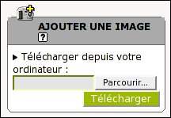

Attention, à ne pas placer des images trop lourdes ; dans ce cas choisissez plutôt de la joindre en tant que document, et dans l'article, placez la vignette à l'endroit désiré (le lien vers le "grand" format sera fait automatiquement).
- Dans l'interface d'administration, naviguez dans l'arborescence jusqu'à
l'article auquel vous voulez joindre une image.
- Cliquez sur
- Dans la page d'édition de l'article, sur le côté gauche :

Cliquez d'abord sur le triangle noir pour développer (ci-contre). Cliquez sur [Parcourir], puis allez selectionner l'image que vous souhaitez attacher à l'article. Cliquez ensuite sur [Télécharger], attendez que le fichier ait été chargé sur le serveur, plus le fichier est gros plus le transfert sera long.
Une fois le fichier joint, la page se rafraichit.
- Pour faire apparaitre l'image dans l'article il vous suffira d'y copier les "petits" codes (dans le champs "texte" et/ou "descriptif") :
- <img5|left> : pour aligner l'image à gauche, par rapport à un paragraphe, une ligne de texte, etc ...
- <img5|center>: pour centrer l'image
- <img5|right>: pour aligner l'image à droite, par rapport à un paragraphe,
une ligne de texte, etc ...
- Dans les paramètres de l'image que vous avez ajoutée, vous pouvez :

Changer le titre de l'image et le descriptif si vous le souhaitez.
Vous pouvez également supprimer l'image tant que l'article est toujours "en cours de rédaction". Ensuite seuls les administrateurs pourront supprimer/modifier l'image.